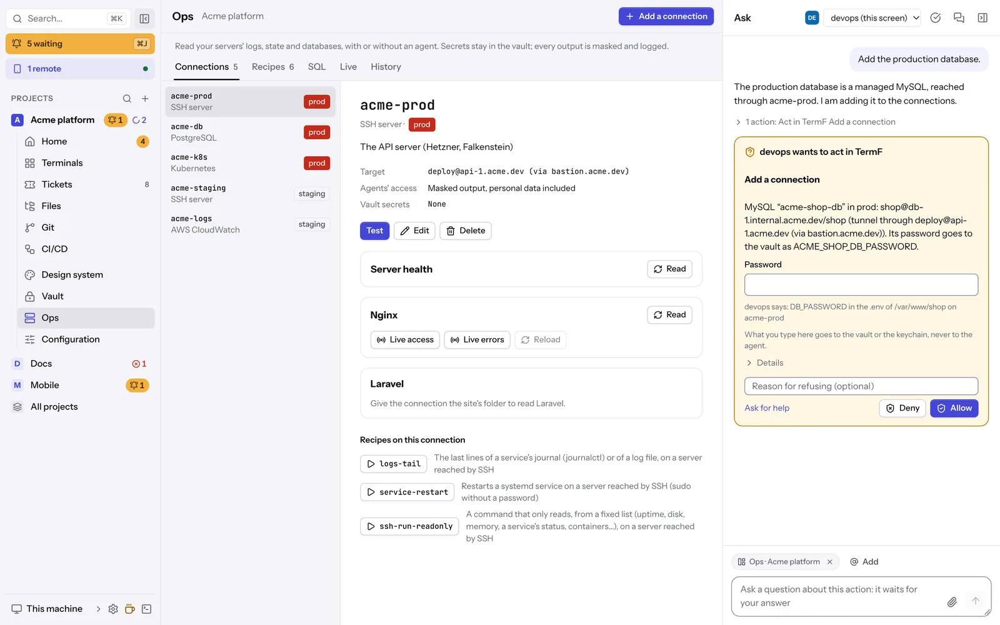
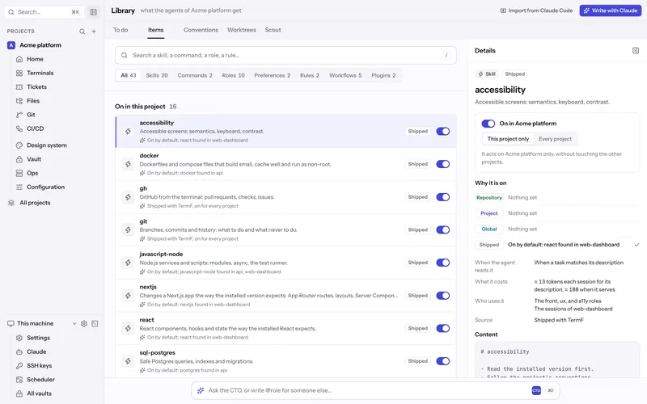

Ops and the DBA
Ask the DBA in your own words: it writes the query, checked as a read before anything runs, and the result becomes a chart. Server health, Nginx, Redis, Laravel and Forge sit next to it.
How the database studio worksGive it a ticket. A CTO plans it, specialists build and test it in parallel, a reviewer checks it. You approve the pull request.
AAcme platform
acme/platform#57Waiting for youFour tasks in parallel, then a code review.
Live 5 agents
12 tests passedDone8 tests passedDone5 edge cases coveredDone1 page updatedDoneNo blocking issueDoneExport invoices to CSV
Ready to deliver · +206 −12 · 6 files
The first launch, a first project, a ticket handed to the team, the review and the pull request, ⌘I, Ops and the DBA, and the sync between machines.
The CTO is your one point of contact. Behind it, every role is a Claude Code session with its own model and its own permissions, and joins a run only when the ticket needs it. You see what each one is doing right now, and answer where it waits for you.
How a run works
Change a role, add your own, or run a role on Codex or Gemini.
Meet every rolePress ⌘I on any screen and ask. The agent does the work itself: adds a database, connects Jira, redeploys a site. Reads and tests just run; a change waits on a card you approve, and a password goes to the vault, never to the agent.
How agents act for you
Add the production database.
It is a managed MySQL, reached through acme-prod. I am adding it to the connections.
DEdevops wants to act in TermF
Add a connection
MySQL “acme-shop-db” in prod, through acme-prod. Its password goes to the vault.
What you type here goes to the vault, never to the agent.
Every changed screen, before and after, side by side or with a slider. Pin a comment where it matters and send it back to the agent.
How the visual review worksYour databases and servers, your dependencies, your machines and what your agents know, in the same window, with the same cards.
Ask the DBA in your own words: it writes the query, checked as a read before anything runs, and the result becomes a chart. Server health, Nginx, Redis, Laravel and Forge sit next to it.
How the database studio worksA map of the project's repositories and how they connect. Every dependency with its latest version, its end of support and its known vulnerabilities, and safe updates in one click, after your OK.
How the stack map worksEncrypted sync brings your projects, vault, SSH keys and Claude Code setup to every machine. My environment keeps the list of tools you use and installs what a new machine is missing, in one go.
How your environment travelsWhat your agents get, in layers you can see and change: roles, rules, skills, preferences, workflows and commands, matched to the stack of each repository.
How the library works
How good the work is, how fast the app is, and what stays on your machine. Each figure comes with how it was measured.
From product owner to security reviewer. The CTO brings in only the ones your ticket needs.
Of what a complex ticket left unsaid, done right by the team, against 72 % for one session, with hidden tests and a blind judge.
From launch to a window you can use, the release build measured by our CI.
A keystroke on screen in a terminal, and 0.1 % CPU at rest.
Everything runs on your computer: no TermF server, account or telemetry. Open source under MIT.
See the benchmarksFree and open source, for macOS, Windows and Linux. You bring Claude Code; TermF brings the team.
curl -fsSL https://vassilidev.github.io/TermF/install.sh | shNeeds Claude Code. Signed and notarized by Apple on macOS. Not signed by Microsoft yet: on Windows, the one-line install avoids the warning.